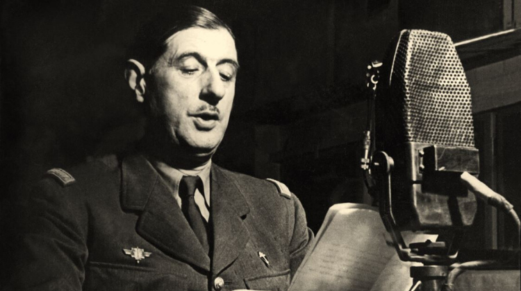

l'Avenue et la Place Charles-de-Gaulle
En 1963, la place et l’avenue de la Mairie sont rebaptisées Charles de Gaulle. Symbole de la Résistance, Charles de Gaulle (1890-1970) s’impose comme chef de la France libre après son appel du 18 juin 1940. Président du Comité français de libération nationale (CFLN) puis du gouvernement provisoire de la République française (GPRF), il devient le premier président de la Ve République en 1959.
